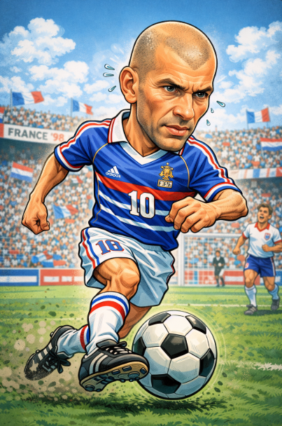

Zinedine Zidane: elegancia, talento y liderazgo
Inicios
Zinedine Zidane nació en Marsella, Francia, en una familia de origen argelino. Desde joven destacó por su técnica depurada y su calma dentro del campo. Su talento lo llevó rápidamente a convertirse en una de las grandes promesas del fútbol francés.
Trayectoria en clubes
- AS Cannes: El inicio de su carrera profesional.
- Girondins de Burdeos: Donde comenzó a brillar en Europa.
- Juventus: Consolidación como uno de los mejores mediocampistas del mundo.
- Real Madrid: Etapa legendaria como jugador y símbolo del club.
Logros y reconocimientos
Zidane dejó una huella imborrable en el fútbol mundial:
- Campeón del Mundo 1998 (Francia)
- Campeón de la Eurocopa 2000
- Balón de Oro 1998
- Champions League con el Real Madrid (gol histórico en la final 2002)
Su actuación en la final del Mundial de 1998 lo consagró como leyenda del fútbol francés.
Impacto económico y cultural
Zidane fue uno de los primeros grandes fichajes galácticos del fútbol moderno. Su influencia trascendió el campo de juego, convirtiéndose en referente de liderazgo, elegancia y profesionalismo. Como entrenador, amplió aún más su legado histórico.
Estilo de juego
Técnica exquisita, control absoluto del balón y una visión de juego excepcional. Zidane hacía que el fútbol pareciera sencillo. Su capacidad para dominar los partidos en momentos clave lo convirtió en uno de los mediocampistas más completos de todos los tiempos.